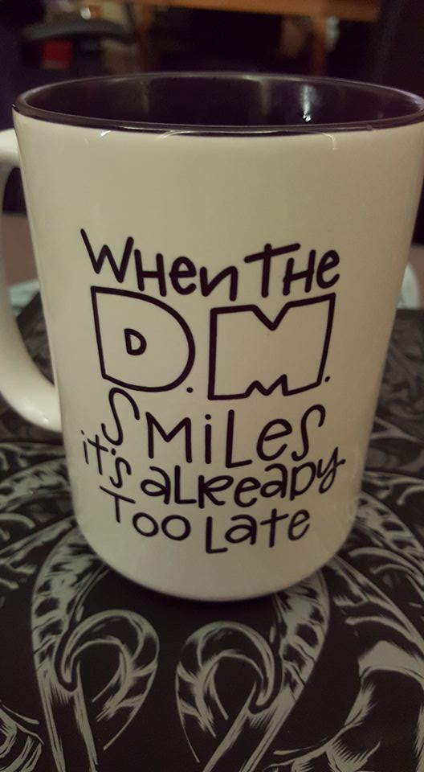
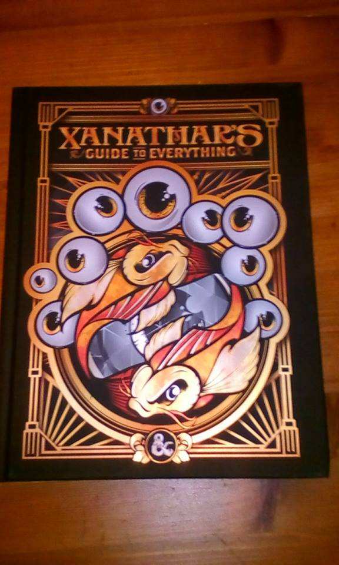
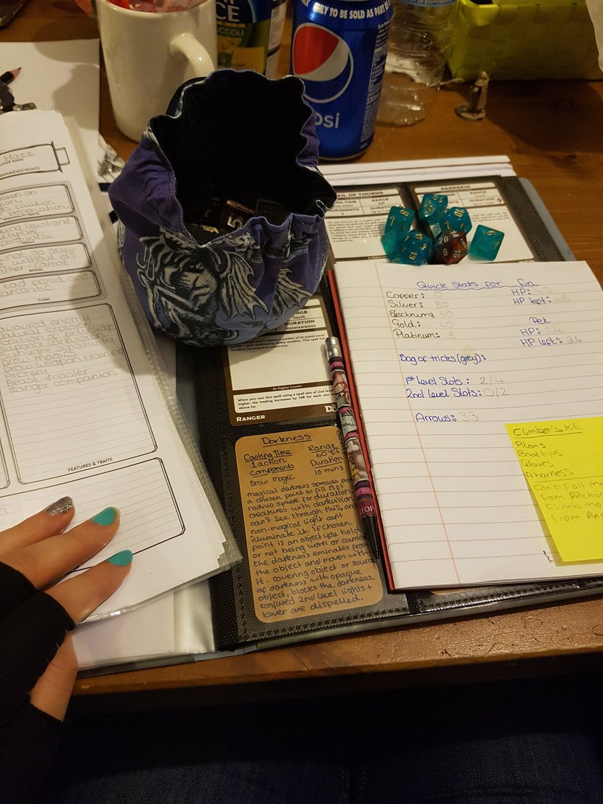

ARTICLES
D&D the Why and the What
- 10 minutes read - 1975 wordsIntroduction
I have been playing D&D for a few years now. I have always wanted to play it ever since I was a teenager. However, it was hard to find a group that played it. I think it’s due to living in Belgium and the game not being that popular there or perhaps I never met the right people back then. None the less, when I moved over to the UK and I met some of my partners friends my interest got rekindled. One friend in particular had a collection of 3.5 books so I asked if he would be interested in running a game. Soon after we were making up characters, chucking dice and our kids seemed to enjoy themselves as well. 
What is D&D?
In order to explain that, I think the concept of a role playing game needs to be explained first and the best way to describe that would be calling it ‘imaginative play’ or ‘collaborative story telling’. Which for me is defined as cooperative play, where we share responsibility, and creatively solve problems posed to us by an imaginary universe/world. Just think back to those childhood days where you pretended to be a all sorts of things. It’s comparable to that, except it is guided by rules and guidelines. Dice are used to represent the chances in success of what you want to do. It’s a very social experience where interaction and communication are key elements.

Why play D&D?
Well, strap yourself in and get ready for an emotional ride, with highs and lows, fear, joy, exhilaration, suspense and sadness, but above all just plain fun.
Sit down around a table with friends and enjoy a good time. Cooperate and communicate face to face. Work your imagination and solve problems put in front of you. Anticipation of a story unfolding together with friends who steer it into unknown directions. It’s the unknown and the excitement of not knowing where it will go that brings excitement into the game as well. In a world filled with more distractions than ever and where social bonds are less deep and harder formed than before. Sitting down and playing a game where attention and communication are key is a very welcome reprieve. It might be a throw back to the past, before social media and instant access to all sorts of information. But I personally don’t think that is such a bad thing. The anonymity of the internet and social media makes it all too easy to build loose and disposable relationships. This game makes it hard to do this. You actually build memories and you will recall those when you talk to your friends or the people you play this game with. This is why I strongly recommend people playing this game and experience it for yourself.


Don’t even get me started on the time the players found a Little Grey Bag Of Tricks in the attic of an inn. The owner had left the inn in their care while he went to check on some relatives of his. They decided to ransack the entire inn, room by room they went until finally they reached the attic where they found a locked chest. With an extremely lucky roll they managed to lock pick the chest and inside they found a little grey bag. After being hesitant and wondering what the bag does, one of the player’s characters decides to just reach down in the bag. I told them she felt something furry. After some hesitation she yanked it out of the bag, all were ready for the worst possible scenario, thinking they had unleashed some monster.Time to try this little thing again. Here goes nothin'! pic.twitter.com/drtbjMfmQy
— 🦄Keldakk🦄 (@PerfidiousWolf) August 14, 2016

All these anecdotes might still sound a bit strange and weird but it’s exactly those moments that are fun and exciting. I have literally hundreds of these moments I can come back to and each one has fond memories.
Still not convinced?
Well, if you’re still not convinced I recommend having a look at a few recorded D&D sessions available to watch on Youtube. There’s Aquisitions Incorporated, one of the first ever live audience D&D games.
The dungeon master of that series Chris Perkins was and still is an inspiration for me.Then there’s the famous Critical Role, that just blew up in success. Then there’s Dungeons Of Drakkenheim from the Dungeon Dudes. Or finally, the long running D&D series Dice Camera Action.
What now, Where do I go?
If you’ve read this far and are intrigued by what you read or saw. I suggest you continue on to the free D&D Basic rules. You would also need a set of dice, more precise a set of RPG dice. There’s many styles and colours to choose from, below is just a selection of sets.


However, you don’t even need that to start, there’s a whole bunch of dice rollers that you could get on your phone.Or have a look at Any Dice that will even give you the average when rolling multiple dice.
You’ll also need a D&D Character sheet or perhaps if you’re not sure about creating your character just yet, you can pick one of the Pre generated character sheets.
A bit more expensive but contains all you need to get started with a few friends is the starter set. The added benefit is that it contains one of the better adventures out there. Written by Richard Baker and Chris Perkins. It also contains the basic rules, some pre generated character sheets and a set of dice. All you need to get started really. However, if you have some more money to spend you could buy the special edition foil books, comes with slip cover, Monster Manual, Players Handbook, Dungeon Master Book and even the latest edition of the Dungeon Master Screen. But again, to just play the game you don’t need any of this. Depending on the players you might want to invest into some miniatures and a battle map. Friends of mine bought the battle map and because they loved their characters they quickly created them at HeroForge, it allows you to customise your character into a mini with different poses, weapons, races and more. Especially where combat is concerned some people just like a grid map to give an overview of the combat, the distance between characters and monsters. Obstacles that might give cover. It can really quick become a strategic choice and some people enjoy that playstyle. While others are happy with using their imagination to play out combat, then a grid isn’t needed that much. Then the last thing you need is some committed friends that you can play with and a dungeon master that knows what you as a player would want. Above all it’s about fun and as long as the players are enjoying themselves it should be good. I often find communication between players and DM is important. As well as a mutual understanding and respect for each others choices.